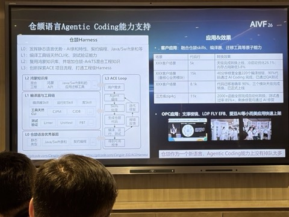
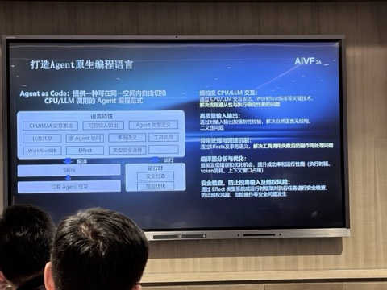
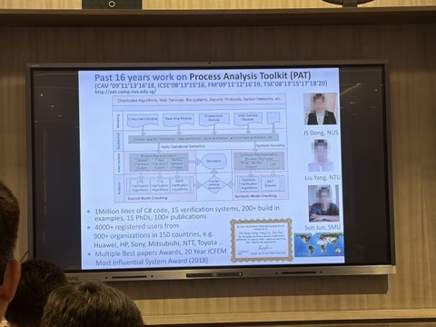
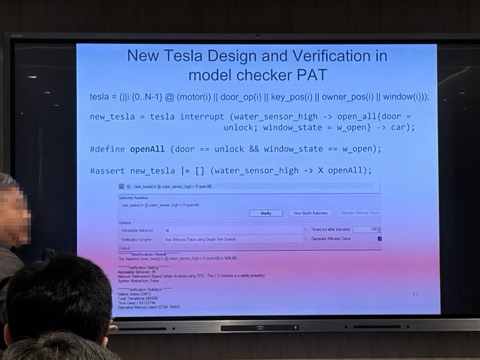
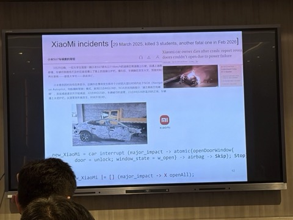
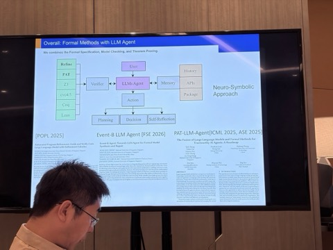
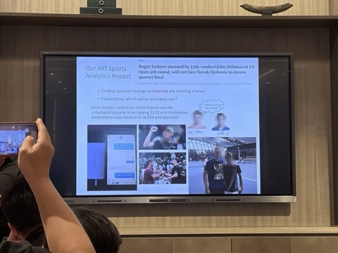
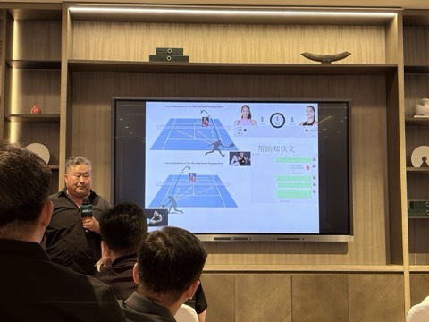
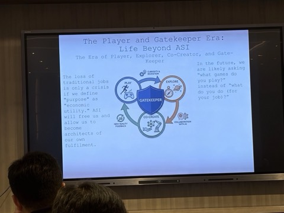

音频围绕形式化方法在程序生成与汽车设计中的应用、大语言模型的局限性、体育策略分析以及超级智能时代人类角色等内容展开讨论，内容如下：
董劲松用最戏剧化的方式论证了「形式化方法 + AI」的不可替代：GPT-5、Gemini-3 都写错的平方根程序，用 refinement calculus 作「形式化思维链」可保证 100% 正确；特斯拉 / 小米的致命车门设计缺陷，本可被形式化方法捕获。他还把概率模型用到网球策略，最后落到「人要当 AI 的守门人」。是全天理想主义与硬核技术结合得最好的一场。








